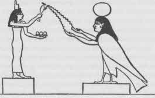

Yalnızlık Adası’nın Prensi uyuyan Tubber Tintye Kraliçesi’yle altın yatakta altı gece altı gün durmuştu, yatak altın tekerlekler üzerindeydi ve tekerlekler durmaksızın dönerken -yatak dönüyor da dönüyordu, gece gündüz durmuyordu- yedinci sabah şöyle dedi, “ ‘Buradan ayrılma vakti geldi.’ Böylece indi ve yanan kuyudan üç şişe su doldurdu. Altın odada altın bir masa vardı ve masada bir somun ekmekle bir koyun budu vardı: ve bütün Erin halkı masadan oniki ay boyunca yese, koyun budu ve ekmek hiç yenmemiş gibi olurdu.
“Prens oturdu, yiyebildiğince ekmek ve koyun budu yedi ve onları bulduğu gibi bıraktı. Sonra kalktı, üç şişesini aldı, heybesine koydu ve tam odayı terk ederken mırıldandı: ‘Kraliçe’nin o uyurken burada kimin bulunduğunu bilebileceği bir şeyler bırakmadan gitmek ayıp olacak.’ Bu yüzden, Erin Kralının oğlunun Yalnızlık Adası’nın Kraliçesi’yle Tubber Tintye’nin altın odasında altı gün altı gece geçirdiğini, yanan kuyudan üç şişe su aldığını ve altın masada yemek yediğini anlatan bir mektup yazdı. Mektubunu kraliçenin yastığının altına koyup dışarı çıktı, zayıf, tüyleri salkım saçak küçük atının sırtına sıçradı ve yaralanmaksızın ağaçları ve nehri geçti.”{260}
Burada maceranın başarılmasındaki kolaylık kahramanın üstün biri, doğuştan kral olduğunu belirtir. Birçok peri masalı ve yeniden vücuda bürünen tanrıların görevlerine ilişkin tüm efsaneler böylesi bir kolaylık sergiler. Sıradan kahraman bir sınavdan geçer, ama seçilmiş olan bir engelle karşılaşmaz ve hata yapmaz. Kuyu Dünya Göbeğidir, yanan kuyu varoluşun yok edilemez özü, dönüp duran yatak Dünya Eksenidir. Uyku kalesi, alçalan bilincin, bireysel yaşamın farksızlaşan enerjiye çözündüğü yer olan düş içinde battığı dipsiz uçurumdur: ve çözülmek ölüm demektir; ölüm de ateş bulamamaktır. Tükenmeyen yemek motifi (bir çocukluk fantezisinden türetilmiştir), evrensel kaynağın sürekli yaşam veren, biçimler kuran güçlerini simgeleyen, tanrıların cornucopia [bolluk boynuzu] şöleninin mitsel imgesinin bütünleyicisi olan peri masalıdır. Bu arada tanrıçayla buluşma ve ateş hırsızlığı gibi iki büyük simgenin bir araya getirilmesi, basit ve açık biçimde insanbiçimci güçlerin mit alanındaki yerini gösterir. Kendi başlarına anlamları yoktur, ama likör, süt, yiyecek, ateş, gurur ve yok edilmez yaşamın muhafızları, vücut bulmuş halleri ya da ihsan edicileridirler.
Bu türden benzetmeler, belki son aşamada olmasa da, hemen başlangıç aşamasında da psikolojik olarak yorumlanabilir, çünkü çocuğun gelişiminin ilk dönemlerinde, zamanın değişikliklerinin ötesindeki bir halin yeni doğan “mitolojisinin” belirtilerini gözlemek olasıdır. Bunlar, anne memesinden koparıldığı zaman çocuğu saran vücut-yıkımı fantezilerine karşı, kendiliğinden savunmalar ve tepkiler olarak belirir.{261} “Çocuk hiddetle tepki verir ve hiddetle gelen fantezi annenin vücudundan her şeyi söküp atmaktır. ... O zaman çocuk, bu itkilerin misillemesinden, yani kendi içindeki her şeyin oyulacağından korkar.”{262} Vücudunun bütünlüğü için kaygılanır, içteki ve dıştaki “kötü” güçlere karşı korunma ve yok edilemezlik için sessiz, derin bir ihtiyaç oluşturan tazmin fantezileri ruhu yönetmeye başlar: ve bunlar yetişkinin daha sonraki nevrotik, hatta normal yaşamsal etkinlikleri, ruhsal çabaları, dinsel inançları ve ayin uygulamaları için belirleyici etkenler olarak kalır.
Sözgelimi büyücü-hekim, tüm ilkel toplumların çekirdeği, “çocuksu vücut yıkımı fantezileri temelinde bir dizi savunma mekanizması aracılığıyla ... ortaya çıkar.”{263} Avustralya’da temel bir inanç, ruhların büyücü-hekimin bağırsaklarını çıkardığı ve bunların yerine çakıl taşları, kuvars kristalleri, bir miktar ip ve hatta bazen güçle donanmış küçük bir yılan gibi bir şey koyduğu yolundadır.{264} “İlk formül fantezide boşaltımdır (içim çoktan yok edildi), bunu tepki oluşturma izler (içim, bozulabilir ve posalarla dolu bir şey değil, tersine bozulamaz, kuvars kristalleriyle dolu bir şeydir). İkincisi yansıtmadır: ‘Vücudun içine girmeye çalışan ben değil, insanlara hastalık maddeleri atan yabancı büyücüler.’ Üçüncü formül tazmindir: ‘Ben insanların içlerini yok etmeye çalışmıyorum, ben iyileştiriyorum onları.’ Bununla birlikte, aynı zamanda, anneden koparılan değerli vücut maddelerine ilişkin ilk fantezi öğesi, iyileştirme tekniğinde geri döner: emmek, çekiştirmek, hastadan bir şey çıkarmak.”{265}
Bir başka yok edilemezlik imgesi, halkın ruhsal “ikiz,” mevcut bedene verilen zararlardan etkilenmeyip bir başka yerde emniyetle duran dışsal bir ruh fikridir.{266} “Ölümüm,” diyordu devlerden birisi, “buradan çok uzaktaki bulması çok güç, engin okyanusta. O denizde bir ada var, ve adada yeşil bir meşe büyüyor, meşenin altında demir bir sandık var ve sandıkta küçük bir sepet ve sepetin içinde bir tavşan, tavşanın içinde bir ördek, ördeğin içinde bir yumurta var: kim yumurtayı bulup kırarsa, beni de öldürmüş olur.’’{267} Bunu başarılı bir çağdaş işkadınının düşüyle karşılaştırın: “Issız bir adaya düşmüştüm. Orada bir de Katolik rahip vardı. İnsanların adadan adaya geçebilmesi için tahtalar uzatmak gibi bir şey yapıyordu. Başka bir adaya geçtik ve orada bir kadına nereye gittiğimi sordum. Birtakım dalgıçlarla daldığımı söyledi. Sonra adanın içlerine gittim, mücevherler dolu güzel bir su vardı ve ‘ben’ orada durup kendimi seyrettim.”{268} Bir tek Güneş Lotusu’nun Ülkesi’nde, denizin dibindeki ikizini bulup uyandıracak olan adamla evlenecek olan bir kral kızından bahseden büyüleyici bir Hindu masalı vardır.{269} Erginlenen Avustralyalı evlendikten sonra, büyükbabası tarafından kutsal bir mağaraya götürülür ve ona orada alegorik şekiller işlenmiş küçük bir tahta parçası gösterilir: “Bu,” denir ona, “senin vücudun; bu ve sen aynı şeysiniz. Onu başka yere götürme, yoksa acı çekersin.”{270} MÖ ilk yüzyılların Maniheistleri ve Gnostik Hıristiyanları, kutsanmış olanın ruhunun cennete vardığında, onun için saklanmış olan “ışık giysisi”ni taşıyan aziz ve meleklerce karşılanacağını söylerlerdi.
144

Çizim 7. İsis Ruha Ekmek ve Su Veriyor.
Yok edilemez Beden için arzulanan en yüce lütuf Hiç Bitmeyen Süt Cennetine kesintisiz yerleşimdir: “Kudüs’le birlikte sevinin ve onu sevenler hepiniz ona koşun: onun için yas tutanlar, hepiniz mutluluk için ona koşun: ki onun tesellilerinin memesinden emip doyasınız; ki emesiniz ve onun izzeti bolluğundan zevk alasınız. Çünkü Tanrı şöyle dedi: Bakın, ona barışı ırmak gibi salacağım ... o zaman ondan emecek, kucağında taşınacak ve dizlerinde okşanacaksınız.”{271} Ruh ve beden besini, kalbin rahatlığı, tükenmez emzik, “Tam iyileşme” hediyesidir. Olimpos Dağı göklere yükselir; oradaki tanrılar ve kahramanlar ambrosia’yla (α: değil; βροτσ: ölümlü) beslenir. Wotan’ın dağ salonunda dörtyüz otuz iki bin kahraman, dişi keçi Heidrun’un memelerinden akan sütle ıslatarak Kozmik Yaban Domuzu Sachriminir’in azalmayan etini yer: keçi, Dünya Ağacı, Yggdrasil’in yapraklarıyla beslenir. Erin’in perili dağlarında, ölümsüz Tuatha De Danaan, durmaksızın Guibne’nin birasını içerek kendi kendilerini hayata döndüren Manannan domuzlarını yer. İran'ın Hara Berezaiti Dağı’ndaki bahçedeki tanrılar, yaşam ağacı olan Gaokerena Ağacı’ndan çekilen, ölümsüz haoma'yı içerler. Japon tanrıları sake içer, Polinezyalılar ave, Aztek tanrıları erkek ve bakire kanı. Ve Yehova'in kurtarılmışları çatıdaki bahçelerinde, cennetin dört tatlı nehrinin likörlerini içerken, Behemoth, Leviathan ve Ziz adlı canavarların lezzetli, tükenmez etini tadarlar.{272}
Hepimizin bilinçdışında hâlâ barındırdığı çocukluk fantezilerinin, mitte, peri masalında ve kilise öğretilerinde yok edilemez varlıkların simgeleri olarak hep yer ettiği açıktır. Bu işe yarar, çünkü zihin imgelerle kendini evinde gibi hisseder ve zaten bilinen bir şeyi hatırlar gibidir. Fakat durum fazlasıyla engelleyicidir, çünkü hisler simgelerde saklanır ve öteye geçmeye ilişkin her çabaya karşı koyar. Dünyayı acımayla dolduran şu çocuksu neşe dolu kalabalıklarla gerçekten özgür olanlar arasındaki devasa engel, simgelerin yol verip aşıldığı yerde yıkılır. “Ey sen,” diye yazar Dünyevi Cennet’ten ayrılırken Dante, “ey sen küçük bir barakada yaşayan, dinlenmeye arzulu olan, şarkıların sürüklediği yazdıklarımı izleyen, kendi yeni kıyılarını görmek için dön; derinlere açılma fazla, çünkü muhtemelen beni kaybedince mahvolacaksın. Aştığım su hiç geçilmemişti. Minerva soluyor ve Apollon rehberlik ediyor ve Musalar’ın dokuzu beni Ayılara götürüyor.”{273} İşte düşüncenin ötesine geçemediği, bütün hislerin gerçekten öldüğü sınır buradadır: dağdaki bir demir yolunun dağcıların yola çıkmadan önce kaldığı ve dağ havasını seven, ama öteye geçmeye cesareti olmayanlarla sohbet etmek için sık sık geldikleri son durağı gibi, imgelemin ötesindeki güzelliğin dile gelmez öğretisi, bize üstü kapalı olarak, özellikle de çocukluğun düşlenen güzelliğini anımsatan figürlerle gelir; masalların yanıltıcı çocuksuluğu bu yüzdendir. Sırf psikolojik okumalar yapmanın yetersizliği de bu yüzdendir.{274}
Metafizik öğretinin başarılı mitolojik bir yorumuna uygulandığında çocukluk imgelerinin alaycılığının inceliği, Doğulu dünyanın çok iyi bilinen büyük mitlerinden birinde harika biçimde görülür. Ölümsüzlük suyu için devlerle tanrılar arasında geçen başlangıçtaki savaşın Hindu öyküsü. Kadim bir yaratık olan Kaşyapa, “Kaplumbağa Adam,” daha da eski yarı tanrısal bir rahip olan “Ahlak Tanrısı” Dakşa’nın on üç kızıyla evlenmişti. Bu kızlardan Diti ve Aditi adlı ikisi sırasıyla titanlar ve tanrılar doğurmuştu. Sonu gelmez bir dizi aile çatışmasıyla her nasılsa Kaşyapa’nın bu oğullarından çoğu esir düştü. Fakat titanların yüce rahibi, büyük perhizler ve meditasyonlarla Şiva’nın, Evrenin Efendisi’nin takdirini kazandı. Şiva onu ölüleri dirilten bir büyüyle ödüllendirdi. Bu da, titanlara, tanrıların sonraki çatışmada hemen fark ettiği bir üstünlük verdi. Tanrılar, kargaşa içinde çekildiler ve birbirlerine danışarak yüce tanrılar Brahma ile Vişnu’ya seslendiler.{275} Onlara, kardeş-düşmanlarıyla, ölümsüz yaşam veren Süt Okyanusu’nun yağı Amrita (α: değil; μριτα: ölümlü), “ölümsüzlük nektarı”nı karıştırmaya yardımcı olmaları için titanları kandırmak üzere geçici ateşkes ilan etmeleri söylendi. Kendi üstünlüklerinin bir kabulü saydıkları bu davetten etkilenen titanlar yardımdan onur duydular; böylece dünya çevriminin dört çağının başlangıcındaki destansı işbirliği macerası başladı. Mandara Dağı yayık sopası olarak seçildi. Yılanlar Kralı Vusuki onu döndürecek yayık ipi olmayı kabul etti. Vişnu’nun kendisi dağın zeminini sırtıyla desteklemek üzere bir kaplumbağa biçiminde Süt Okyanusu’na daldı. Dağa sarıldıktan sonra yılanın bir yanını tanrılar, diğer yanını devler tuttu. Ve hep beraber bin yıl boyunca karıştırdılar.
Denizin yüzeyinden yükselen ilk şey kara, zehirli, Kalakutta, “Kara Zirve” denen bir duman, yani ölüm gücünün en yüksek yoğunlaşmasıydı. “İç beni,” dedi Kalakutta; ve çalışma onu içebilecek birini buluncaya kadar durdu. Bir başına, uzakta oturan Şiva’ya gidildi. Derin içe kapanmış meditasyon halinden muhteşem bir biçimde çıktı ve Süt Okyanusu’nun karıştırıldığı yere doğru ilerledi. Ölüm karışımını bir kadehe koyup bir yudumda yuttu ve yoga gücüyle boğazında tuttu onu. Boğazı mavileşti. Bu yüzden Şiva’ya “Mavi Boyun,” Nilakantha denir.